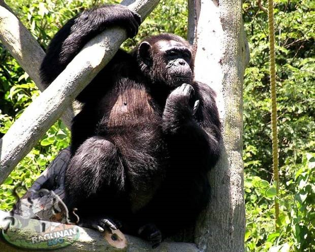
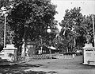
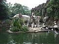
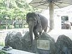
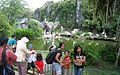
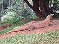

Sekedar informasi pada tahun 2005 tepatnya 19 September ragunan pernah ditutup sekitar 3 minggu karena hewan-hewan didalamnya terinfeksi flu burung, namun pada 11 oktober kembali dibuka. infonya bisa Anda lihat disini Jika Anda ingin mengunjungi kebun binatang ragunan, wisata ini buka pada jam 6.30 pagi dan harga tiketnya untuk mobil Rp.6.500 tiket untuk dewasa Rp.4.500 dan untuk anak-anak Rp.3.500. harga yang murah untuk berekreasi bukan? Di dalamnya Anda dapat melihat-lihat hewan-hewan seperti gajah, monyet dan lain sebagainya, karena disana banyak sekali hewan-hewan. Ini cocok untuk memperkenalkan hewan kepada anak Anda.
Bukan hanya itu saja, di kebun binatang ragunan Anda juga dapat menyewa bendi jalan-jalan tanpa harus berjalan kaki Untuk menyewa bendi dikenakan biaya Rp.15.000. Anda juga dapat menyewa sepeda tandem juga lho, biayanya Rp.10.000 dan ada juga kereta biayanya Rp.6500. Murah-murah deh di Ragunan Oh ia untuk Anda yang ingin masuk ke pusat primata Anda dikenakan biaya masuk kembali harganya untuk senin-jum’at Rp.6000 dan untuk hari libur nasional Rp.7500. Anda juga bisa menyaksikan film dokumenter Primata dengan biaya Rp.150.000 untuk sekali putar. Sejarah[sunting | sunting sumber] Kebun Binatang Ragunan adalah kebun binatang pertama di Indonesia. Kebun binatang ini didirikan pada tahun 1864 dengan nama Planten En Dierentuin yang berarti "Tanaman dan Kebun Binatang." Terletak pada tanah seluas 10 hektare di kawasan Cikini, Menteng, Jakarta Pusat yang merupakan pemberian Raden Saleh. Saat itu, Planten En Dierentuin dikelola oleh Perhimpunan Penyayang Flora dan Fauna Batavia yang tergabung dalam Culturule Vereniging Planten en Dierentuin at Batavia.[2] Tahun 1949, nama Planten En Dierentuin diubah menjadi Kebun Binatang Cikini dan pada tahun 1969 dipindahkan ke kawasan Ragunan, Pasar Minggu, Jakarta Selatan pada tahun 1964. Pemerintah DKI Jakarta menghibahkan lahan seluas 30 hektaree yang menjadi rumah bagi kebun binatang ini. Gubernur DKI Jakarta Ali Sadikin meresmikan Taman Margasatwa Ragunan pada 22 Juni1966. Transportasi[sunting | sunting sumber] • Transjakarta: Koridor 6 • Kopaja: S13 AC (via Koridor 8, Koridor 1, Koridor 9) ke Grogol • Kopaja: S602 AC (via Koridor 6, Koridor 9, Koridor 1) ke Monas • Kopaja: S602A AC (via Koridor 6, Koridor 9, Koridor 1) ke Dukuh Atas • Kopaja: P19 AC (via Koridor 1) ke Tanah Abang • Kopaja: S68 ke Kampung Melayu (via Pasar Minggu) • Kopaja: S605A ke Blok M • Kopaja: S612 ke Kampung Melayu (via Mampang) • Metromini: S77 ke Blok M • Mikrolet: M42 ke Mampang • KWK: S15A ke TMII • KWK: S19 ke Kebayoran Lama
Galeri
Planten En Dierentuin 1920an
Patung gajah di Kebun Binatang Ragunan
Gajah di Kebun Binatang Ragunan
Schmutzer Primate Centre, Jakarta
Kebun binatang Ragunan, tempat wisata keluarga
Komodo di kebun binatang Ragunan
Source: https://id.wikipedia.org/wiki/Kebun_Binatang_Ragunan